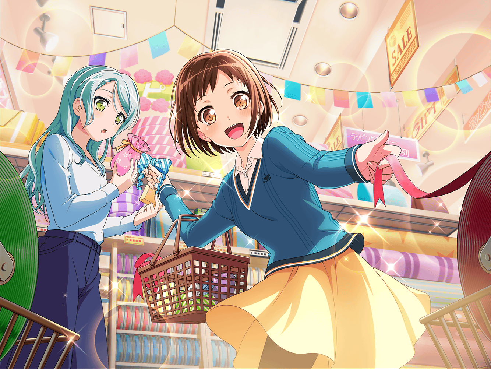

駅前
つぐみ
（ふふっ、今日は紗夜さんとお買い物！
すごく楽しみだなあ）
つぐみ
（でも、少し早く来すぎちゃったかも。
待ち合わせの時間まで、まだ余裕あるし、どこかで……）
つぐみ
……って、あれ？
あそこに立ってるのって……
紗夜
……
つぐみ
紗夜さん！
す、すみません！
お待たせしてしまいましたか？
紗夜
羽沢さん。
いえ、今来たところですよ
つぐみ
ほんとですか？
なら、よかったです
紗夜
今日は、誘ってくれてありがとうございます。
メール、嬉しかったわ
つぐみ
い、いえ！
私の方こそ急に誘ってしまって……
その、迷惑じゃなかったですか？
紗夜
今日はバンドの練習も休みでしたので
大丈夫ですよ
つぐみ
よ、よかった！
私、それだけがすごく心配で……
紗夜
ふふ、そんなに心配しないでください。
そろそろ行きましょう
つぐみ
はいっ！

ショッピングモール 雑貨屋
つぐみ
紗夜さん、到着しました！
ここが私が言っていた雑貨屋さんです！
お店のデザインがかわいいって、有名なんですよ！
紗夜
なるほど、そうなんですか……
つぐみ
どうかしましたか？
紗夜
いえ、
恥ずかしい話なのですけど……
紗夜
私、こういうかわいいお店に入るという経験が
あまりなくて……
紗夜
ついつい実用的な物が売っている場所を選んでしまうんです
紗夜
だから、その……ごめんなさい
慣れていなくて……
つぐみ
そ、そんなっ！
謝らないでください！
大丈夫ですよ！
つぐみ
（うぅ、ちゃんと紗夜さんの意見も聞いておけばよかったなあ……
で、でも、まだ挽回できるよね？）
つぐみ
（せっかくふたりでお出かけにしにきたんだもん。
今日は、楽しんでもらえるように頑張ろう！）
紗夜
そういえば……
つぐみ
はい、なんですか？
紗夜
この間、羽沢さんに教えてもらったレシピで、
さっそくクッキーを作って、メンバーに差し入れをしてみました
つぐみ
そうなんですか！？
ど、どうでした……？
紗夜
雰囲気を和ませることができて
練習にいい効果をもたらすことができた気がします
つぐみ
それって……
みなさんに喜んでもらえたってことですね！
紗夜
ええ……
美味しいと言ってもらえましたし
喜んでくれていたと思いますね
つぐみ
わ～！
それは本当によかったです！
紗夜
ただ、クッキーを出した時、
メンバーに驚かれたのは困りました
紗夜
確かに、私はそういうタイプではないと自覚はしているけれど、
まさかあそこまで驚かれるとは思っていなかったわ……
つぐみ
それは……
つぐみ
（でも、メンバーのみなさんの気持ちもわかるなあ。
私もお菓子教室に紗夜さんが来た時は
すっごく驚いちゃったし……）
紗夜
ごめんなさい。
すっかり話し込んでしまいましたね。
そろそろ見て回りましょうか
つぐみ
はい！
そうですね！
つぐみ
紗夜さん、見てください。
ここはラッピンググッズの品揃えが豊富なんですよ！
紗夜
ええ、見たことないものが
たくさんありますね
紗夜
羽沢さんがお菓子教室の時に
言っていた通り、リボンの種類も豊富だわ
つぐみ
このお店は私のお気に入りなんです！
こっちにはかわいい包装袋がありますよ！
紗夜
こんなにあると悩んでしまいます……
どれにすればいいのかしら……
つぐみ
あ、それなら……
これとかどうですか？
つぐみ
花柄やいちご柄がとてもかわいいですよ！
紗夜
ふふっ。
羽沢さん、まるでお店の人みたいですね
つぐみ
あ、その……
すいません
紗夜
いえ、気にしないでください。
お店に慣れない私のために気を遣ってくれてるんですよね？
ありがとうございます
紗夜
羽沢さんのおかげで
だんだんとここの雰囲気にも慣れてきたわ
つぐみ
ほ、本当ですか？
よかったです！
つぐみ
ところで
この花柄といちご柄の袋はどっちがいいですか？
紗夜
どちらもかわいいと思いますが、別の柄にしてもいいかしら
紗夜
あまりかわいいラッピングで差し入れをしたら
私のイメージとは違いますし、驚かせてしまいそうですから
つぐみ
（なんか、こうやって恥ずかしがってる紗夜さんって、
ちょっとかわいいかも……）
紗夜
ところで、羽沢さんは
どんなものを買うつもりなんですか？
つぐみ
あ、私はこの音符柄がいいなって
思ったんですけど……
紗夜
落ち着いたデザインで素敵ですね
同じのを買っても構わないですか？
つぐみ
もちろんです！
あ、あっちには型抜きも売っているんですよ！
見に行きましょう！
紗夜
ふふ。
ええ、そうしましょう